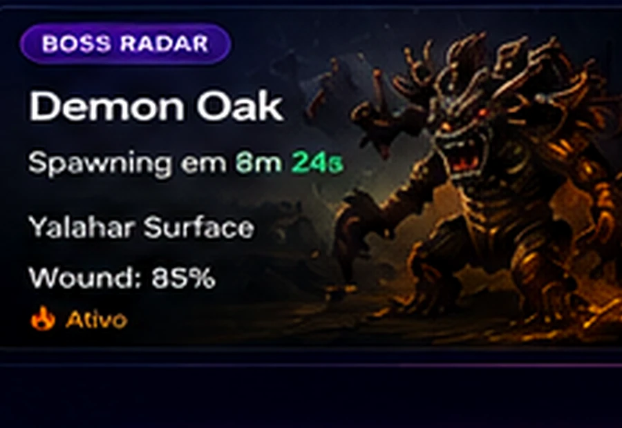
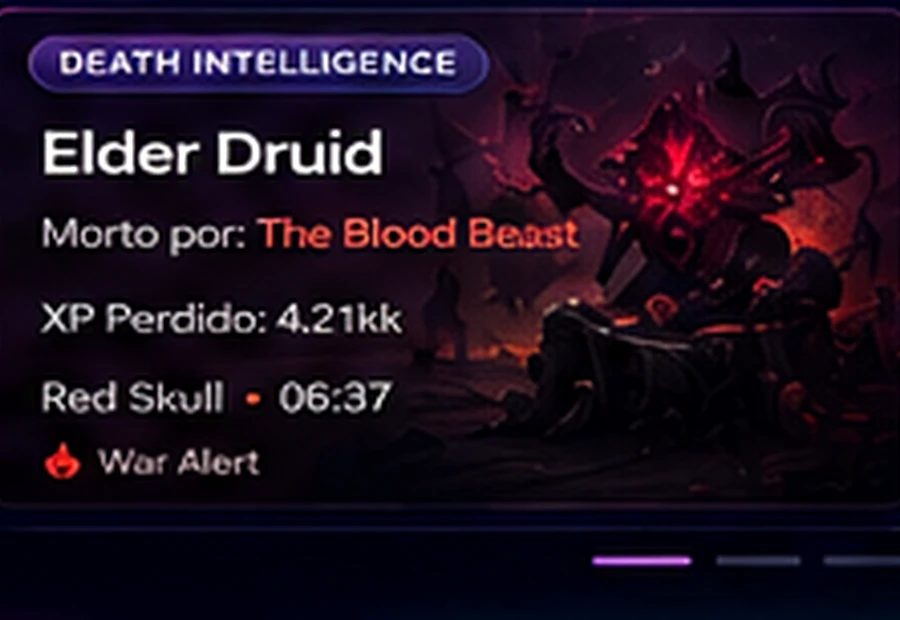
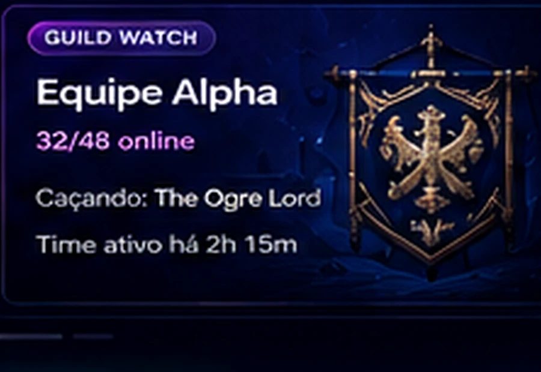
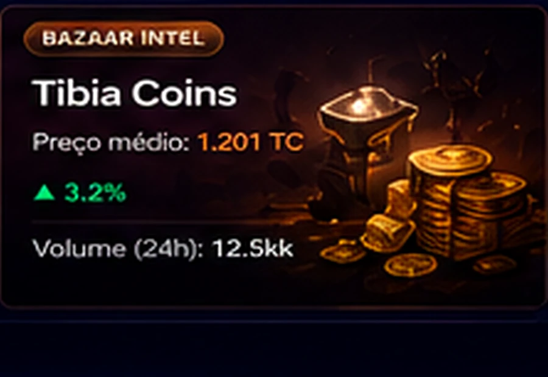
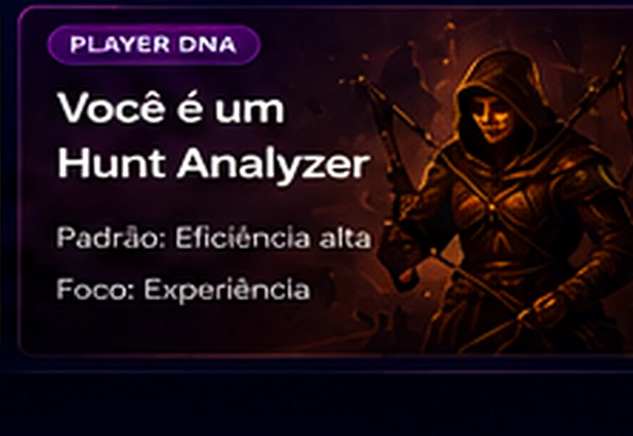
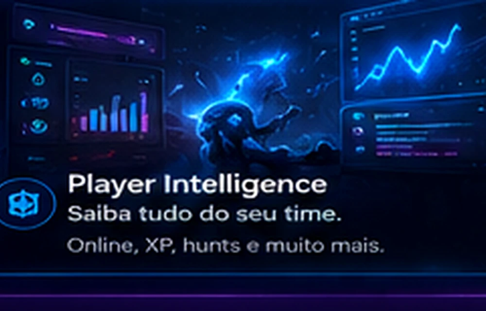
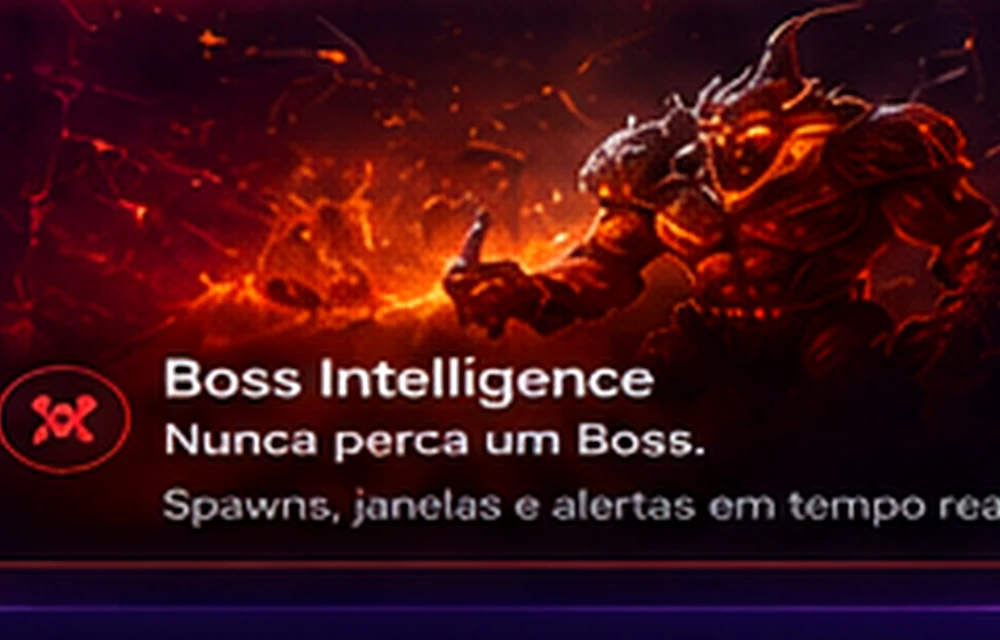
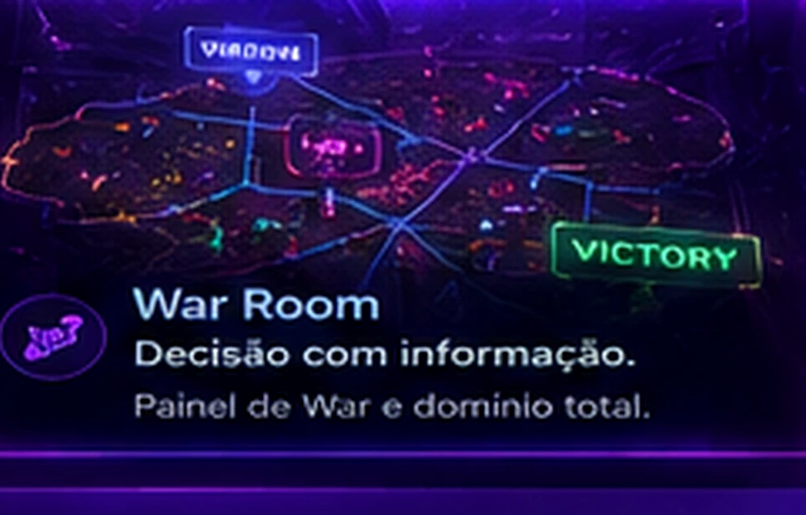
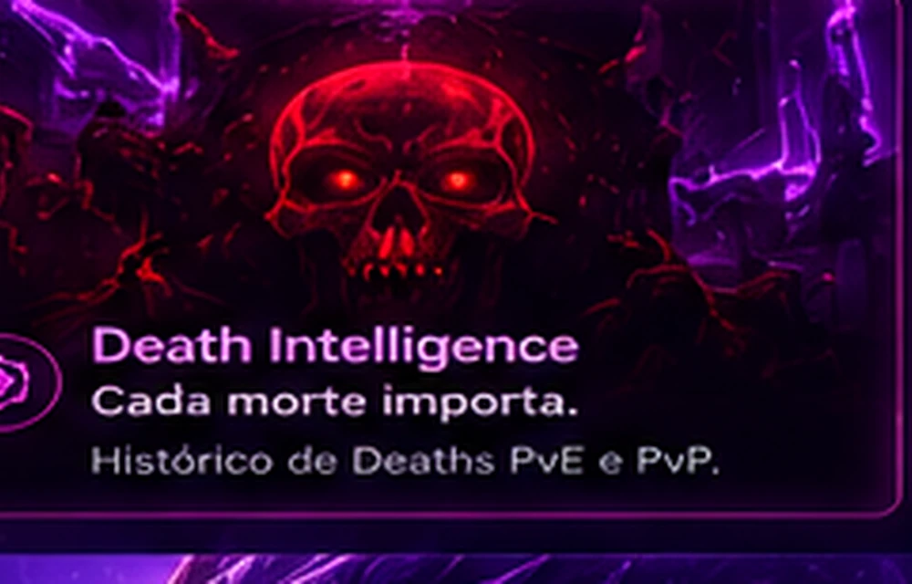

BOSS RADAR
Boss Intelligence
Radar de atenção e contexto.
Inteligência em tempo real para RubinOT. Mais controle, mais contexto e menos tempo perdido trocando de tela.
Cards visuais que mostram o que o bot faz sem obrigar o visitante a imaginar.

Radar de atenção e contexto.

PvE/PvP, responsável e histórico.

Atividade coletiva e sinais de PT.

Top, watch e interesse.

Ritmo, padrão e consistência.
O futuro é Discord + DZbot.



Online, XP, hunts e muito mais.

Spawns, janelas e alertas.
Preços, volume e oportunidades.

Painel de War e domínio total.

Histórico PvE e PvP.
Status, sessão, level e contexto operacional no Discord.
Guild, PT, rotina e objetivos.
Somente o que gera valor.
Canais e experiência por servidor.
O DZbot entrega contexto.
Sim. O produto atual é posicionado para RubinOT e para guilds/PTs no Discord.
O fluxo principal fica no Discord; links externos aparecem quando agregam valor.
Sim. O bot organiza aliados, alvos e personagens observados.
Não. Trabalha com histórico, sinais e níveis de atenção.
Não. O bot organiza top, watches, interesse e acesso ao leilão.
É contexto derivado do histórico observado: ritmo, consistência e marcos.
Sim. A implantação é composta conforme a necessidade da guild/PT.
Não. A proposta é personalizada.
Transforme informação espalhada em inteligência acionável.